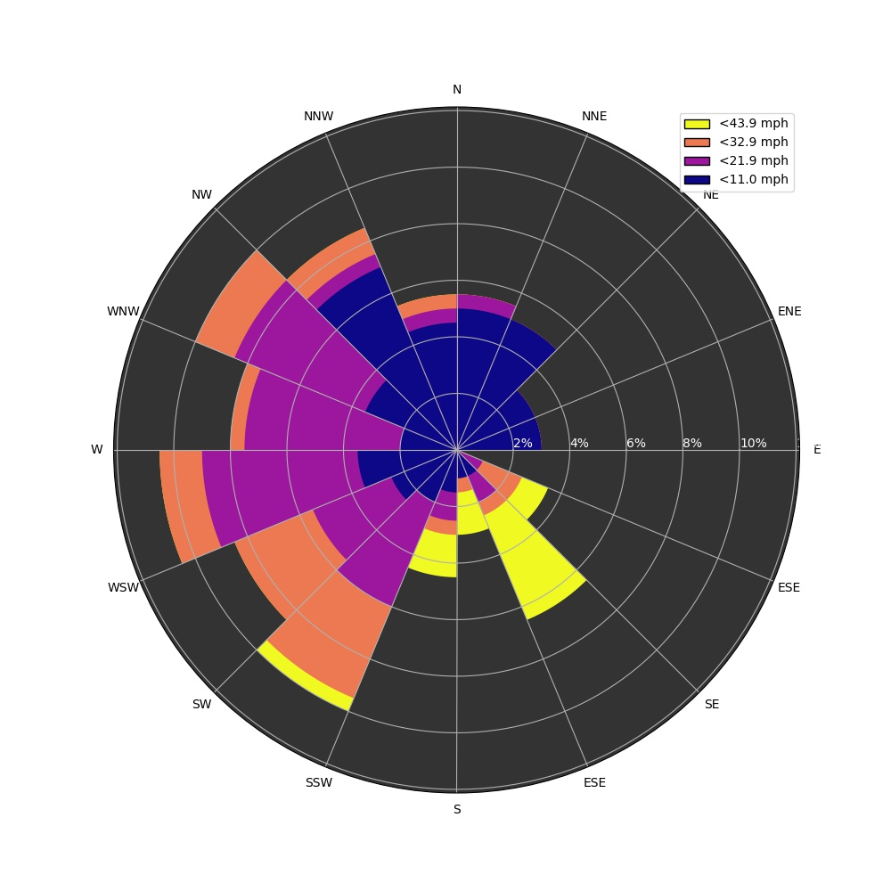
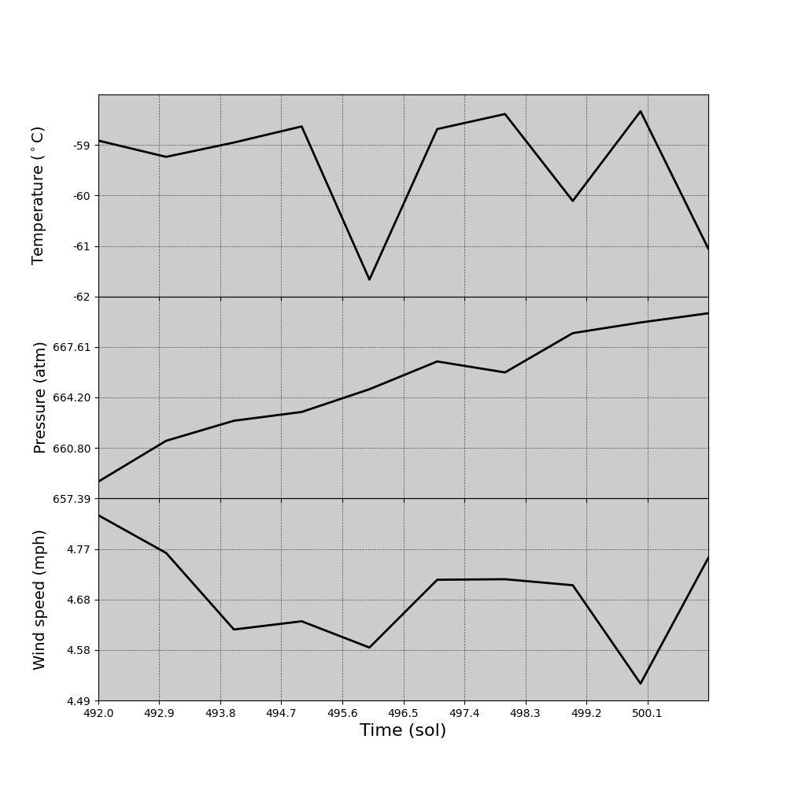

The Majestic Mars Rover. In this project, we wanted to inform clients and others of Mars' weather.
We decided on this project because we wanted to explore more information on Mars and
inform others in a simplified local form. We began by extracting and organizing data on
Mars' weather measurements and compiling them into graphs that could be easily
understood and interpreted. The data we are making use of is from NASA's MARS InSight Mission.
We are also utilizing this data to forecast future Mars' weather, by a day or so.
Wind Rose Plots

This is the Wind Rose data. The direction of the wind
Temp/Pressure/Wind Plots

This is the Temperature and Pressure data.
About the team
Garret Faucher
Elliot Heinrich
Thomas Sheboy
Stanhope Nwosu, a senior Computer Science major and Statistic minor.
They like to play the trumpet and enjoys beaches.